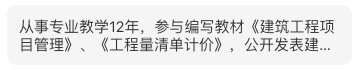
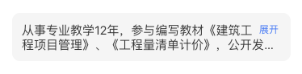
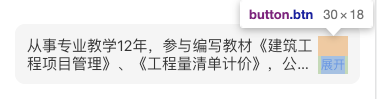
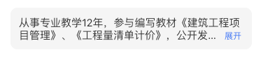
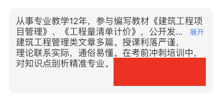
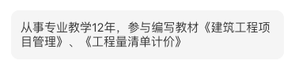
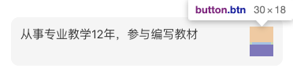
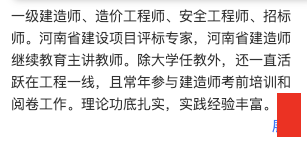
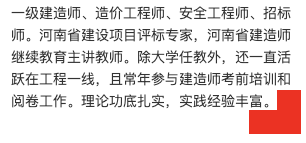

手上的项目观察到这么一个页面，可以看到教师简介溢出省略的位置是不固定的，显然展示的效果不太理想。
这块文字溢出省略支持展开的功能，不想用js选择了一个比较暴力的方式。通过判断字符串长度，小于40则截取前40个字符展示，文字末尾加...，支持展开。实际上中英文字符宽度是不固定的，并没有达到期望的效果。
CSS实现这个布局和交互感觉有难度，js有现成的组件能用，但我还是会优先考虑CSS。
实现的难点
- 多行溢出省略，且右下角环绕显示“展开”按钮
- 文本不超出固定行数，不显示“展开”
- 展开和收起的切换
布局文件：
1
| <div class="teacher-desc">从事专业教学12年，参与编写教材《建筑工程项目管理》、《工程量清单计价》，公开发表建筑工程管理类文章多篇。授课利落严谨，理论联系实际，通俗易懂。在考前冲刺培训中，对知识点剖析精准专业，考前技巧独到。</div>
|
一：多行文字溢出省略，“展开”按钮在右下角，实现文字环绕。
1. 多行文字溢出省略，用line-clamp
1
2
3
4
5
6
7
| .teacher-desc {
overflow: hidden;
text-overflow: ellipsis;
display: -webkit-box;
-webkit-line-clamp: 2;
-webkit-box-orient: vertical;
}
|
显示如下：

2. “展开”按钮在右下角，实现文字环绕。
第一个想法是用float，我们试试float的实现效果
1
2
3
4
5
6
7
8
9
10
| // html
<div class="teacher-desc">
<button class="btn">展开</button>
从事专业教学12年，参与编写教材《建筑工程项目管理》、《工程量清单计价》，公开发表建筑工程管理类文章多篇。授课利落严谨，理论联系实际，通俗易懂。在考前冲刺培训中，对知识点剖析精准专业，考前技巧独到。
</div>
// css
.btn {
float: right;
}
|

现在尝试把“展开”按钮移到右下角
1
2
3
4
| .btn {
float: right;
margin-top: 20px;
}
|

用margin可以看到，上方空出了一块，没有实现环绕的效果。环绕效果可以考虑`shapes布局`。不了解的可以看这篇文章[写给自己看的CSS shapes布局教程 « 张鑫旭-鑫空间-鑫生活](https://www.zhangxinxu.com/wordpress/2019/02/css-css3-shapes/)
我们完善一下样式
1
2
3
4
| .btn {
// ...
shape-outside: inset(calc(100% - 1.5em) 0 0);
}
|

## 二: 文本不超出固定行数，不显示“展开”
通过js来判断文本区域高度比较容易，那通过css怎么实现呢？不影响布局的前提下，用伪元素在文本后面加一个块覆盖展开按钮
1
2
3
4
5
6
7
8
9
| .teacher-desc {
&::after {
content: '';
width: 100%;
height: 100%;
position: absolute;
background: #fff;
}
}
|
给文本区域加个高度看一下效果，可以看到小方块是紧跟文本后面的

再改一下小方块颜色，文本字数减少看效果

很不错很完美，然后新的问题出现了

本文只有一行时，文本区域高度不对，展开按钮设置了margin-top。
一开始想用calc计算出离上边距的距离margin-top：calc(100% - 18px)，这里有个不常用容易忽略的点，margin百分比的参照物是父元素宽度， 而不是高度。用margin是解决不了这个问题了，用伪元素试试
1
2
3
4
5
6
7
8
9
10
11
12
13
14
15
16
17
18
19
20
21
22
23
24
25
26
27
28
29
30
31
32
33
34
35
36
37
38
39
40
41
42
43
44
45
46
47
48
49
50
51
| // html
<div class="teacher-container">
<div class="teacher-desc">
<button class="btn">展开</button>
<span>从事专业教学12年，参与编写教材《建筑工程项目管理》、《工程量清单计价》，公开发表建筑工程管理类文章多篇。授课利落严谨，理论联系实际，通俗易懂。在考前冲刺培训中，对知识点剖析精准专业，考前技巧独到。</span>
</div>
</div>
// css
.teacher-container {
display: flex; // 解决父级高度自适应，子级高度100%但是元素却无法撑满
padding: 12px;
width: 345px;
font-size: 15px;
line-height: 18px;
background: #f5f5f5;
border-radius: 10px;
}
.teacher-desc {
overflow: hidden;
text-overflow: ellipsis;
display: -webkit-box;
-webkit-line-clamp: 2;
-webkit-box-orient: vertical;
&::before{
content: '';
float: right;
height: calc(100% - 16px);
}
&::after {
content: '';
position: absolute;
width: 100%;
height: 18px;
background: #f5f5f5;
}
.btn {
float: right;
clear: both;
padding: 0 3px;
font-size: 10px;
color: $primary;
border-radius: 3px;
background: none;
shape-outside: inset(calc(100% - 16px) 0 0);
}
}
|
三、文本展开
展开设置样式
1
2
3
| .teacher-desc {
-webkit-line-clamp: 999; // 设置一个较大的数
}
|
还有一种情况要处理，展开被挤到下一行，而覆盖展开的块是紧跟文字的，展开没有被完全覆盖住。

这里用box-shadow处理
1
2
3
| .excerpt::after{
box-shadow: -2em 2em #fff;
}
|
这里用红色更容易看效果
